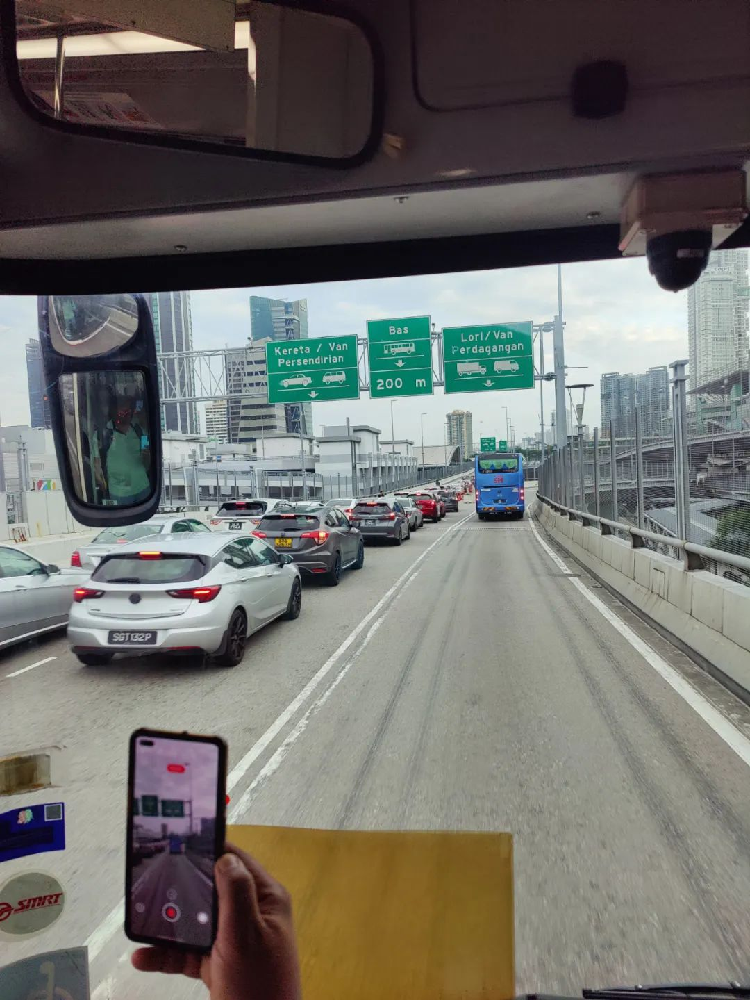
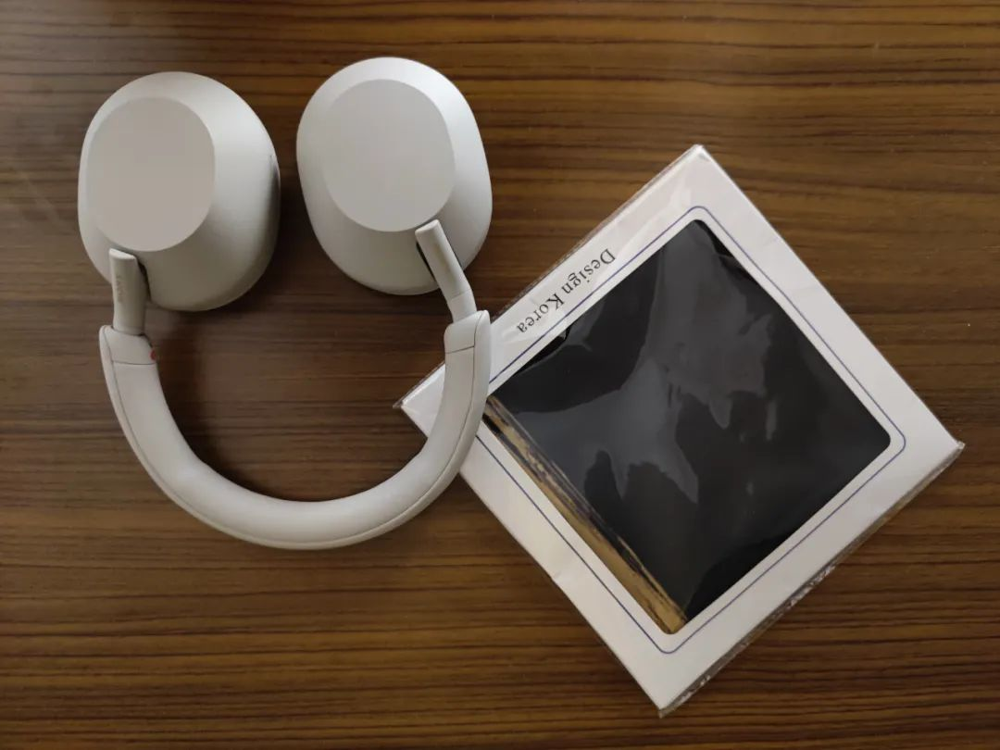

共计2649个字，46张图
周三开完了组会。我交了一堆的计算任务去服务器上。半个月以来终于有一天可以不用赶理学院的末班车回寝室了。虽然，在工学院玩了一会，最后去赶了工学院的末班车。
周四和三个好朋友约了去新山，大家都是平常努力到脱力，急需一次放松的旅行来缓解一下自己，急需一段长时间的消停。新山是马来西亚西南端柔佛州的首府。从新加坡去那边市中心，最方便的莫过于先到克兰芝/兀兰地铁站，坐个公交车到口岸，过新加坡的海关、上过境车、再过马来西亚海关。
周三晚上，约七点半在地铁站见，我说这么早？不得劲我可能要晚到，因为从寝室到集合地铁站高低也得四十分钟一个小时，岂不意味着我六点半就得从寝室溜。离谱。
事实上，周四一早我不到六点就自然醒了。坐上公交车看手机，同行的一位华裔新加坡人和一位印裔新加坡人已经人在地铁站了。我？？？是小学生春游吗这么急迫？？？约了七点半结果你们七点不到就人在了，我还担心说我迟到，结果七点十二就到了。最后来的是印度人，但也七点二十五就到了。通常，新加坡的关口总是飞快地就清完了，但是大马的关口都排着长队。这天格外顺畅，我拍过完马来西亚海关之后的照片，才七点五十九分。

总结起来就是 周四一天吃了七家店：
· 鸭皇药材烧腊大王Restoran Ya Wang @28, Jalan Segget
· 協裕麵包西菓廠Hiap Joo Bakery & Biscuit Factory @ 13, Jalan Tan Hiok Nee
· kopiloco by 1993 @ 64 & 65, Jalan Tan Hiok Nee
· 简单云吞面 JD Wan Tan Mee @Taman Abad
· 旧街场白咖啡OldTown WhiteCoffee @ LG-051, Lower Ground, The Mall, Midvalley, Persiaran Southkey 1
· TANDOOR N GRILL @ F01-01, KOMERSIL SOUTHKEY MOZEK, Persiaran Southkey 1, KOTA SOUTHKEY
· 恭和堂Koong Who Tong @Level 3: Lot J3-20, City Square
反正也是记流水账。可以说从去年十一二月复学以来，除了除夕之外，这是吃得最好的一天。
赶上药材烧腊店开门。一走进门就看到我做动物实验的师兄笑地上的死老鼠:) 不过显然几个在实验室搞医药的博士生出门，止把这当做是笑料。当归烧鸭、泡参烧鸭、十全烧鸭、琵琶烧鸭，虽然最后这个可能是单纯地写错了也可能是故意假借一个吃下去就像在味蕾上弹琵琶的这种说法，不过终于觉得是很妙。


我给朋友解释说，这种药材的配比甚至可能是传统中医留下来的内容。尝试了一下用英语解释食补药补，好在都是对各种方剂再熟悉不过的人，很快就能把天然产物组分的配合作用流程讲明白(虽然具体的发挥物质显然不是两三话能说清的事


转场去协裕，买了个香蕉蛋糕：讲道理是真的炭烤。能完全吃到一点没有杂质的混合感，香蕉的风味完全融入到蛋糕里面，就好像一口下去不知道香蕉在哪里但又实打实地在每个地方。吃过的人都说夸。
四个累麻了的人在两国边境的长堤海峡边，坐在花坛上一边瘫着一边吃。都在实验室累麻了。


吃完了不知道怎么又有劲儿了(笑
商量着那不如去再吃一餐，于是又回了刚刚买香蕉蛋糕的文化街。尽管只是随便走进了一家kopiloco，本来我对ta的期望没有很高，我们也就当是找个地方喝一杯早咖啡。我看到流沙咸蛋馒头的时候犹豫了一下，因为这是一道上限很高但是下限也很低的东西。
没想到！！成了这一天里所有人交口称赞觉得最能夸的一道，R09流沙咸蛋馒头（6粒）Salted Egg Custard Bun RM8.9大概合人民币十三四块钱。馒头能烤酥脆本身是一件很讲白案功夫和火功配合的本事，妙的是里面调的流沙馅，完全不是普通流沙包的那种妖艳风。夸这道，希望下次去的时候还能锁住这个味道。


走去KSL，马杀鸡集中地。我说上次我试了一个手劲巨大但是按得挺不错的萨瓦迪卡。印裔同学说他也按过那家。后来一想，要不测评家新的店，于是换了泰皇鼎。要等一会，我记得上次来KSL看到了采耳，本以为会有专门店于是到处找，结果发现都是美发美甲的配套服务，罢了，撤。
Body Massage, 我直接入睡了两次，打鼾然后把自己打醒了。因为时间本来也到中午十二点多了，虽然不饿，但实在地感觉到了疲劳。也可以说是在实验室的疲劳还没有消失。长期在电脑前久坐，按到脑后颈上的风池穴我当时就感觉疲劳的地方没错，就是全集中在了那里。都不需要和技师说，技师直接在风池穴又继续来了一程。
出来之后印度师兄说，他昨天才跟另一位华裔师兄讲右膝关节有点不舒服，今天也没有告诉技师，技师也是精准地找到了位置然后再来了一程。就很妙，出来之后记下了这家店。再去几家的话我就去写篇马杀鸡测评(可等明年吧您
出来之后货真价实地感觉到饿了。于是走向路上过来看到的简单云吞面。丝毫不夸，这是吃过的面质最接近我在上海杭州一线吃过的面质。当然是夸的意思。


怂恿之下，在面店里拍了这张肖像。回来修的时候才看到虽然人很高兴，但眼袋已经泄露了没有休息好的事实(夸眼袋很机灵

去一趟在南匙谷的中城购物中心Mid Valley Southkey, 寝室里抗噪音起见还是想着弄个好一点的降噪耳机。从上一站彩虹广场开始见到的各个电器店，都推说让我来这里找。事实上也只能找到索尼，还好我想找到的就是索尼的头戴，而且也比在新加坡和在京东都要便宜。冲！
冲之前，在旧街场白咖啡搞了杯咖啡先。既然决定了要冲，那早一个小时两个小时也不是什么要紧事，不如先逛逛看有没有别的店子。事实很残酷，意思就是，没有别的耳机店比如森海塞尔Bose这样的店子可以来比较了。所以，略过。


冲好了，时间也五点了，可以去吃晚饭了。印度师兄选了附近的一家北印度风味餐馆TANDOOR N GRILL。两位泰米尔人上来就先各自整了杯Jal-jeera，看得我们两个华人一愣一愣的。我们不妨来简单看一下维基百科的翻译：

不得不说，飞饼和这道羊肉蒸饭都很妙。飞饼上涂抹上红红的酱料，羊肉是全烤好之后没在饭里面。的确很不错，北部邦的饮食这两道我已解锁。


吃完饭了，总觉得不能太着急去吃下一顿。终于要去看一个景点了（误）玻璃兴都庙Arulmigu Sri Rajakaliamman Glass Temple是一个印度教的寺庙。
大部分地方都在装修。没逛多久就离开了。但是里面有几处地方，通过取景器看的时候还是会觉得很不一样。按下不表。

八点多，准备返程了。

临返程的时候，在新山城中坊City Square搞了杯恭和堂的凉茶。虽然说这家是做龟苓膏起家的，不过廿四茶和五花茶这两个用不同料配起来的凉茶也是不错。又背了两瓶回学校。

十点钟坐在实验室开始修图。
十一点前赶到网球场，本来以为是聊天局，结果成了运动局（麻中麻）一天下来就像本科生的那种军训式旅游一样。
说真，上次干这种起早出去吃一天的事，还是20年1月在武汉不知天高地厚地自驾出去起底武汉过早江湖，在武昌汉口吃了一早、从宜家返校然后去吃俄罗斯餐。
好累，但吃得也是真不错。返程的时候就看到新加坡到马来西亚方向排长队了，新闻说通关时间直接超过六小时。我：溜溜球…..(((….((8868